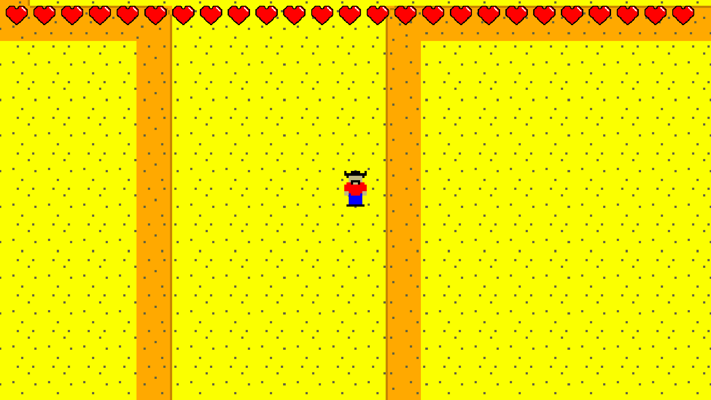

Hello everyone!
Savior isn't even out yet, but I already have a development update on Version 1.1.0, the first content update.
This is the update that focuses on the badlands, as well as some new content updates. I won't get into those, but I do have a general progress update.
If you don't follow me on social media at all, which probably means you're not even seeing this, then you might not have even seen anything. Here is a screenshot of the Mesa during development.

If you think it looks like s*** that's because it does. It's early in a room's development before the default tile was changed to the orange sand.
The badlands is now roughly 70% complete, and likely to be finished by the end of the week before major bug testing, as now I only have rooms to work on.
This is crazy to say seeing as the game isn't even out yet, but the update will probably be finished by the end of the month, and it should be released less than a week after the game comes out, which is great. Because of this, I plan to skip a bug fix patch (unless it's literally unplayable), and fix the bugs in this release. Since I scrapped the Part 1 and 2 idea, this area will be ready to load and play as soon as you update. Just pop in your save file and you're good to go, assuming you finished the boss of course.
There's actually something new in this area that nobody knows about, but it is core to the game from this point on. Very exciting stuff, and I can't wait for you to see in just a few months.
I don't know how much I'm allowed to say, but Savior is doing quite well, number wise, on Steam. I'm very happy to see it do this well, and I hope it continues. The demo was seen over 40,000 times, and it hasn't been up for very long, roughly 10 days. The base game is doing well, but not that well. I... I hope you all know that the game isn't just the demo. That... that could be bad. Anyway, it's doing great, and I am forever grateful.
There is so much in Savior that isn't explained, and the story is really only just about to get started. It's going to be a fun ride, I hope you enjoy it.